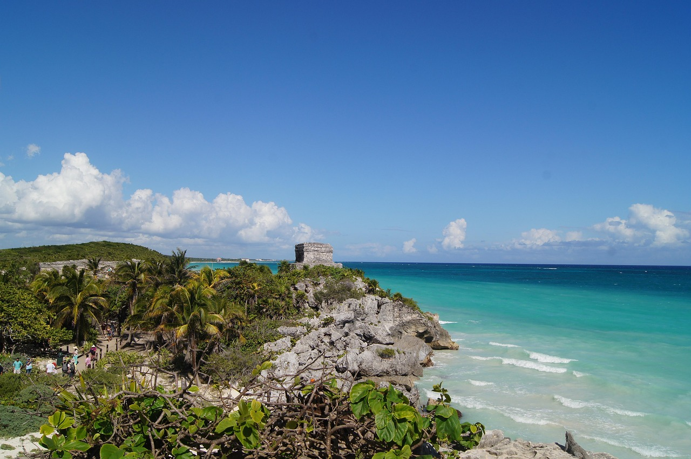

Exploring the Wonders of Mexico
Hello, fellow travellers! Welcome back to my blog. Today, I’m writing to you from the vibrant heart of Mexico, where I’ve been soaking in the sights and sounds of this beautiful country. From the colourful streets to the mouthwatering food, Mexico has been an absolute feast for the senses. Every day has brought a new adventure, whether I’m strolling through bustling markets filled with fresh fruit and handmade crafts or exploring ancient ruins that date back centuries. The warmth of the people and the rich history around every corner have made this journey unforgettable.
One of my favourite moments so far has been walking along the coast. The beaches here are simply breathtaking, with crystal-clear waters that stretch as far as the eye can see. I’ve spent hours watching the waves crash on the shore and listening to the calls of seabirds overhead. In the evenings, the sunsets are a sight to behold. The colours paint the sky in shades of orange, pink, and purple. The sounds of the ocean and the gentle breeze are the perfect way to end the day. Every time I step out of my hotel, I feel like I’m living in a postcard. Mexico, with its vibrant culture and natural beauty, is a place that keeps surprising me at every turn.
Stay tuned for more updates on my journey!
Written by Terry Singh
Last update: 20/03/15